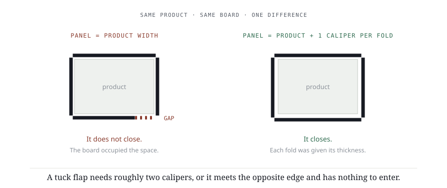
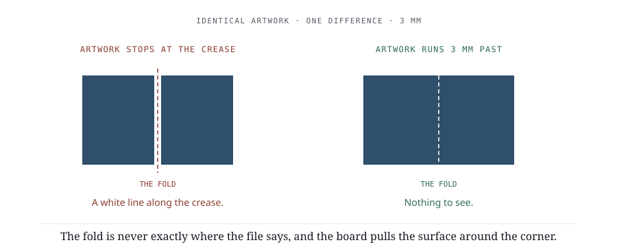

Week 9 · Drawing it for real
Week 3's fold test, on your own product, with real dimensions and a real material behind it. The module summative — and the drawing week 10 cuts in board.
Course outcomes: LO 2.
By the end of this week you can
- Draw a dieline to a measured product with the board's own thickness allowed for.
- Place glue tabs on faces that can actually receive them.
- Carry bleed through a fold rather than stopping it at a panel edge.
AssessmentModule summative. Competency 2.
To successfully complete Week 9, please do the following:
- ReadDrawing it for real
- Review14 slides from class
- DoWeek 9 Lab — The paper check
- SubmitWeek 9 Assignment — Phase 4, dieline and flat artwork
- OpenPaper check log — Phase 4
- ReviewProvided material — 0.50 h this week. Distributed in class.
- LessonDrawing it for real
- Slides14 slides from class
- LabWeek 9 Lab — The paper check
- AssignmentWeek 9 Assignment — Phase 4, dieline and flat artwork
- SheetPaper check log — Phase 4
Diagrams
From the lesson. Yours to keep — print them, mark them up.


Review before class0.50 h
Material is provided in class. This is on top of the lesson, the lab and the assignment.
Terms are in the Glossary, by module.